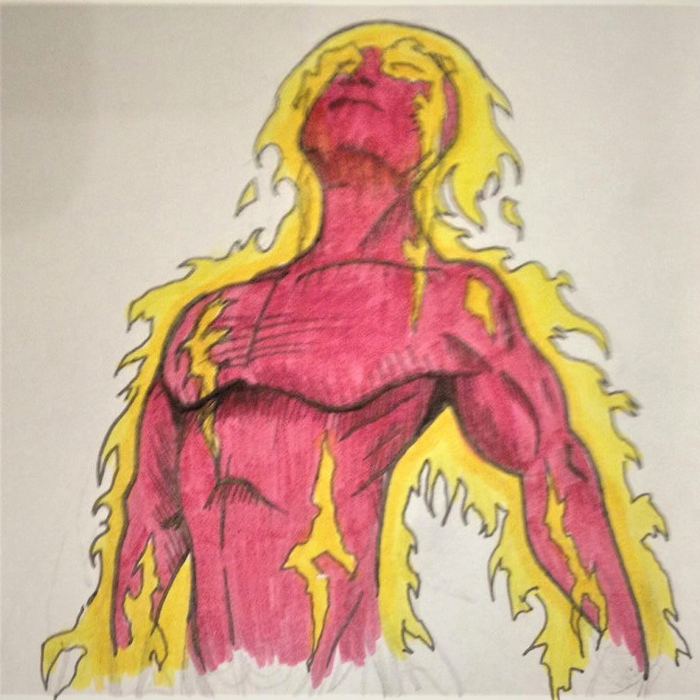
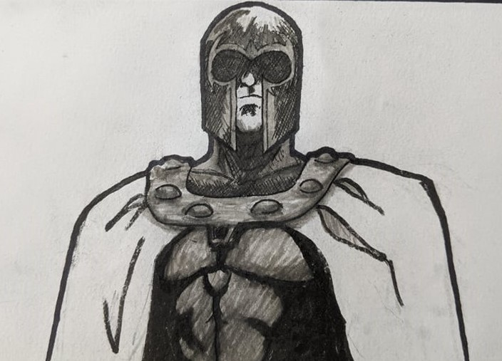

Human Torch (Physical)

Flame on! This is a hand-drawn picture I made a few years ago by mixing colored pencils and ink for the outlines.
"Headband Guy" (Digital)
A digital drawing of an original character I made while testing out a drawing pad my wife bought for me.
Magneto (Physical)

A sketch of one of my favorite Marvel character, the enigmatic arch-villain of the X-Men, Magneto - Master of Magnetism! I used pencil and ink to achieve this effect.